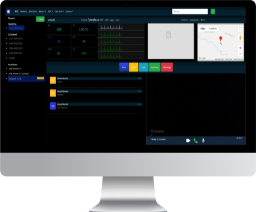
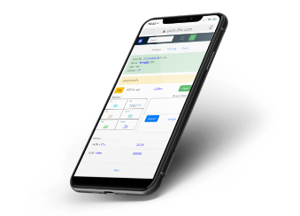

SMART AOC
ระบบติดตามรถพยาบาลฉุกเฉิน (Ambulance) สามารถประเมินตรวจสอบผล แบบเรียลไทม์ มีระบบสื่อสารที่เป็นมาตรฐาน สะดวก เพิ่มประสิทธิภาพการประสานงานระหว่างศูนย์สั่งการและเจ้าหน้าที่ได้ดียิ่งขึ้น

AOC MOBILE
ระบบติดตามรถพยาบาลฉุกเฉิน (Ambulance) สามารถประเมินตรวจสอบผล แบบเรียลไทม์ มีระบบสื่อสารที่เป็นมาตรฐาน สะดวก เพิ่มประสิทธิภาพการประสานงานระหว่างศูนย์สั่งการและเจ้าหน้าที่ได้ดียิ่งขึ้น
AOC DASHBOARD
ระบบติดตามรถพยาบาลฉุกเฉิน (Ambulance) สามารถประเมินตรวจสอบผล แบบเรียลไทม์ มีระบบสื่อสารที่เป็นมาตรฐาน สะดวก เพิ่มประสิทธิภาพการประสานงานระหว่างศูนย์สั่งการและเจ้าหน้าที่ได้ดียิ่งขึ้น